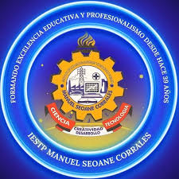

El Instituto de Educación Superior Tecnológico Público Manuel Seoane Corrales es una institución reconocida por su formación técnica profesional de calidad. Brinda diversas carreras orientadas al desarrollo tecnológico y la inserción laboral de sus estudiantes.

Además, el instituto promueve valores como la responsabilidad y la innovación en sus estudiantes. Cuenta con docentes capacitados y ambientes adecuados para el aprendizaje práctico. Su objetivo es formar profesionales competentes para el mercado laboral.